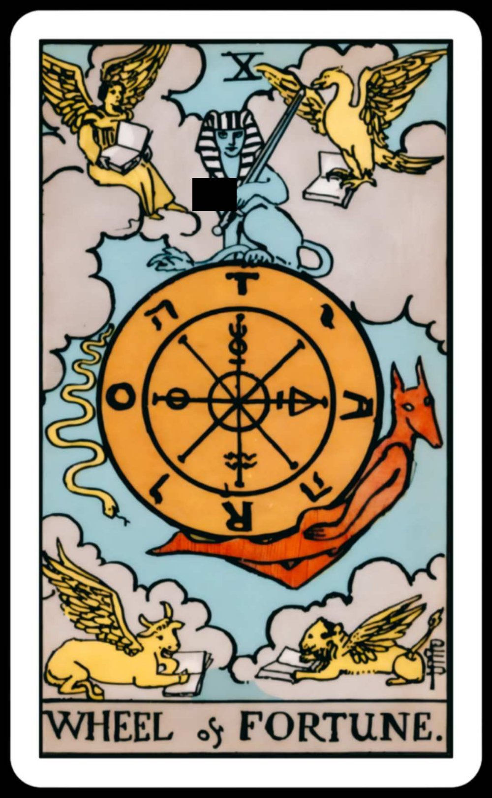
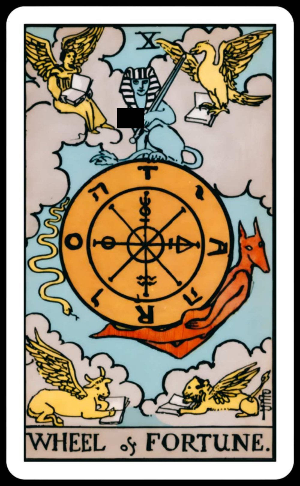

Let the cards tell your future or something
Though the original tarot cards were invented in Italy in the mid 15th century, occult faiths began using them in the 18th century for divination, sometimes known as cartomancy. Since then, tarot has been used by people of all faiths, with the most common practicioners being of Russian or Greek Orthodoxy, Mormonism, and Judaism.


 
